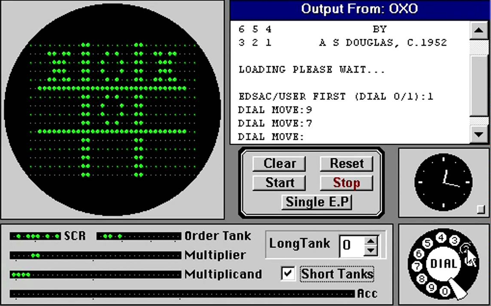

Компьютерные игры берут свое начало в 50-ые года двадцатого века. Сегодня игровая общественность до конца не определилась, кто является их первоначальным создателем. История знает трех человек, которые в 1950-ые годы начинали работать над данным вопросом.
Первым из этих людей является Ральф Баэр. Будучи инженером в 1951 году он предложил общественности идею интерактивного телевиденья.
Создана первая логическая компьютерная игра «OXO» - компьютерная реализация «крестиков-ноликов»
Вторым человеком является А.С. Дуглас. В 1952 году им была написана игра, получившая название «ОХО». Данная игра представляла собой программную реализацию всем известных «крестиков-ноликов».
Создан первый симулятор игры в теннис "Tennis for Two".
И третьим человеком, которого можно назвать отцом компьютерных игр, является Уильям Хигинботем. В 1958 году он создал компьютерную игру «Теннис». В нее могли играть два человека.
Создана компьютерная игра «SpaceWar!».

Компьютерные игры стали настоящим культурным феноменом - возникнув как незамысловатый плод творческой мысли программистов, они с каждым годом приобретали всё большую популярность - и развились до того, что стали отдельной специфической спортивной дисциплиной - киберспортом.